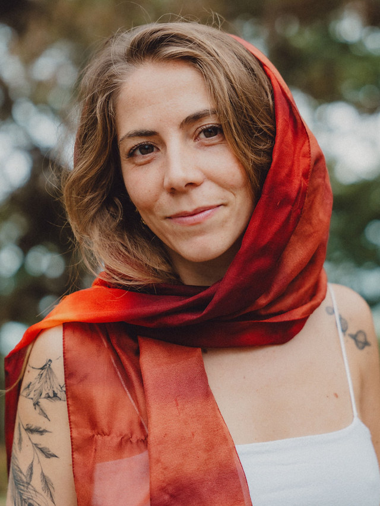

Somatic coach and yoga teacher in Lausanne
Coach somatique et professeure de yoga à Lausanne
Hi, I'm Andrea.
Bonjour, je suis Andrea.
I help people who feel stuck, stressed or anxious to slow down and listen to their body again.
J'accompagne les personnes qui se sentent bloquées, stressées ou anxieuses à ralentir et à écouter à nouveau leur corps.

Who I am
Qui je suis
For many years I followed the path my rational mind had drawn for me. I studied economics because it would "open many doors", then data science because everyone said it was the future. I ended up as a data analyst in a big corporation, spending my days improving strategies to sell more detergent.
I stayed almost four years. I call it the golden cage. The salary and the benefits were so good that it was hard to see how far that job was taking me from myself.
But a small voice inside me kept getting louder, asking: Who am I? Is this what I want to do for the world in this lifetime? What is my purpose? Can I be free? What is freedom?
That's when yoga came into my life. It brought me back into my body. I started to notice the games my mind was playing, and to feel something precious in me that couldn't grow in that environment. Slowly, a deep trust grew, and it helped me make the risky decision to quit my job and travel. A full jump into the dark, not knowing where it would lead.
Today I work with the body, helping people learn again how to feel. Often they come to me because they feel stuck, overwhelmed or anxious, as if they were running after life instead of living it. I've been there too.
If you recognise yourself in this, book an intro call. We'll just chat and see if it feels right.
With love,
Andrea
Training
- InnerLifeSkills Master Coach (ICF-accredited school)
- Somatic Educator (Somatic Institute for Women)
- 200h Yoga Teacher, Hatha and Ashtanga (Yoga Alliance)
Pendant de nombreuses années, j'ai suivi le chemin que mon mental rationnel avait tracé pour moi. J'ai étudié l'économie parce que cela allait « m'ouvrir beaucoup de portes », puis la data science parce que tout le monde disait que c'était l'avenir. Je me suis retrouvée data analyst dans une grande entreprise, à passer mes journées à améliorer des stratégies pour vendre plus de lessive.
J'y suis restée presque quatre ans. Je l'appelle la cage dorée. Le salaire et les avantages étaient si bons qu'il était difficile de voir à quel point ce travail m'éloignait de moi-même.
Mais une petite voix en moi devenait de plus en plus forte et me demandait : Qui suis-je ? Est-ce vraiment ce que je veux faire pour le monde dans cette vie ? Quel est mon but ? Est-ce que je peux être libre ? Qu'est-ce que la liberté ?
C'est à ce moment-là que le yoga est entré dans ma vie. Il m'a ramenée dans mon corps. J'ai commencé à remarquer les jeux de mon mental, et à sentir en moi quelque chose de précieux qui ne pouvait pas grandir dans cet environnement. Peu à peu, une confiance profonde est née, et elle m'a aidée à prendre la décision risquée de quitter mon travail et de voyager. Un saut dans le vide, sans savoir où il me mènerait.
Aujourd'hui, je travaille avec le corps et j'aide les personnes à réapprendre à ressentir. Souvent, elles viennent me voir parce qu'elles se sentent bloquées, débordées ou anxieuses, comme si elles couraient après la vie au lieu de la vivre. Je suis passée par là, moi aussi.
Si vous vous reconnaissez dans ces mots, réservez un appel découverte. On discutera simplement, pour voir si c'est juste pour vous.
Avec amour,
Andrea
Formations
- Master Coach InnerLifeSkills (école accréditée ICF)
- Éducatrice somatique (Somatic Institute for Women)
- Professeure de yoga 200h, Hatha et Ashtanga (Yoga Alliance)
What I offer
Ce que je propose
1:1 somatic coaching
Coaching somatique individuel
A space without judgement, where all your parts can feel safe to show up. We start by slowing down, connecting to the breath and to the sensations in the body. We learn how to read and regulate your nervous system, to regain control over your life. We learn the language of the body. Through breath, movement, sound and touch, we give a voice to the sensations and to the parts of you that usually get no space. When we make room for them, we can often understand the need they carry underneath, and unlock what has been holding you back. Little by little, you will learn to listen to the messages of your body and build a new relationship with yourself.
Un espace sans jugement, où toutes vos parts peuvent se sentir en sécurité pour se montrer. On commence par ralentir, en se connectant au souffle et aux sensations du corps. On apprend à lire et à réguler votre système nerveux, pour reprendre la main sur votre vie. On apprend le langage du corps. Avec la respiration, le mouvement, le son et le toucher, on donne une voix aux sensations et aux parties de vous auxquelles on ne laisse pas de place d'habitude. Quand on leur accorde de l'espace, on arrive souvent à comprendre le besoin qu'elles portent au fond, et à débloquer ce qui vous retenait. Petit à petit, vous apprendrez à écouter les messages de votre corps et à construire une nouvelle relation avec vous-même.
Curious how your nervous system works? I wrote a short free guide on stress, anxiety and how the body finds its way back to calm.
Envie de comprendre comment fonctionne votre système nerveux ? J'ai écrit un petit guide gratuit sur le stress, l'anxiété et la façon dont le corps retrouve le calme.
Read the guideLire le guideSomatic Flow yoga
Hatha-vinyasa where you really feel your muscles as you move. Open to all levels. More about the yoga
Du hatha-vinyasa où l'on sent vraiment ses muscles en mouvement. Ouvert à tous les niveaux. En savoir plus sur le yoga
Women's circles and work with women
Cercles de femmes et accompagnement des femmes
A small circle where women can bring what they carry and be met without being fixed. In 1:1 work too, I accompany women around feeling safe in their body, sensuality, the menstrual cycle, and the beliefs we inherited about how a woman's body should look and behave.
Un petit cercle où les femmes peuvent déposer ce qu'elles portent et être accueillies, sans qu'on cherche à les réparer. En individuel aussi, j'accompagne les femmes autour de la sécurité dans leur corps, de la sensualité, du cycle menstruel et des croyances héritées sur ce que le corps d'une femme devrait être.
Workshops
Ateliers
Nervous system regulation, embodiment and contact dance, in small groups.
Régulation du système nerveux, embodiment et danse contact, en petits groupes.
Yoga

Yoga class at the ALPS Foundation conference, 2026
Cours de yoga à la conférence de la Fondation ALPS, 2026
I teach Somatic Flow, hatha-vinyasa sequences taught with somatic awareness: moving with the breath, pausing to feel, and practising from sensation rather than performance. My somatic and coaching background brings nervous-system awareness and a warm, safe space to every class, for beginners and experienced practitioners alike.
J'enseigne le Somatic Flow, des séquences de hatha-vinyasa guidées avec une conscience somatique : bouger avec le souffle, faire des pauses pour ressentir, et pratiquer à partir des sensations plutôt que de la performance. Mon parcours somatique et de coach apporte à chaque cours une attention au système nerveux et un espace chaleureux et sécurisant, pour les débutants comme pour les pratiquants confirmés.
In my classes we cultivate a body awareness you can take into any sport, and into everyday life. Open to all levels.
Dans mes cours, on cultive une conscience du corps que vous pouvez emporter dans tout sport, et dans la vie de tous les jours. Ouvert à tous les niveaux.
Group classes, workshops and private sessions in Lausanne. Write to me for upcoming dates.
Cours collectifs, ateliers et séances privées à Lausanne. Écrivez-moi pour les prochaines dates.
200h Yoga Alliance certified (Hatha and Ashtanga), trained in Nepal and India.
Certifiée 200h Yoga Alliance (Hatha et Ashtanga), formée au Népal et en Inde.
Kind words
Ils en parlent
"I have tried yoga many times, but this is the first time it truly reached me. The gentleness of your guidance and your invitations let me relax into not caring about what it looks like, just feeling what was happening inside me. You have a gift."
« J'ai essayé le yoga plusieurs fois, mais c'est la première fois que cela m'a vraiment touchée. La douceur avec laquelle vous avez guidé la séance et vos invitations m'ont permis de me détendre, sans me soucier de quoi j'avais l'air, juste en sentant ce qui se passait en moi. Vous avez un don. »
"I didn't really know what to expect and was a little nervous, but Andrea created a safe and welcoming space for us. I had been highly anxious for several days, and after the workshop I found myself in a really strong state of bliss, self-love, acceptance and connection."
« Je ne savais pas vraiment à quoi m'attendre et j'étais un peu nerveuse, mais Andrea a créé pour nous un espace sûr et accueillant. J'étais très anxieuse depuis plusieurs jours, et après l'atelier je me suis retrouvée dans un état de joie profonde, d'amour de soi, d'acceptation et de connexion. »
"Andrea and Federico guided the contact dance with kindness, gentleness, and care. It made me realize how much I had been missing that feeling of connection."
« Andrea et Federico ont guidé la danse contact avec gentillesse, douceur et attention. Cela m'a fait réaliser à quel point ce sentiment de connexion me manquait. »
"This journey made me explore parts of myself I didn't know existed. I learned to know the sensations of my body through something so simple and yet so fundamental: the breath. Never a judgement, only understanding and extraordinary help."
« Ce parcours m'a fait explorer des parts de moi dont je ne connaissais pas l'existence. J'ai appris à connaître les sensations de mon corps à travers quelque chose de si simple et pourtant si fondamental : le souffle. Jamais un jugement, seulement de la compréhension et une aide extraordinaire. »


Let's talk
On en parle ?
The first call is free and without commitment. We'll see together if this work is right for you.
Le premier appel est gratuit et sans engagement. On verra ensemble si ce travail est fait pour vous.